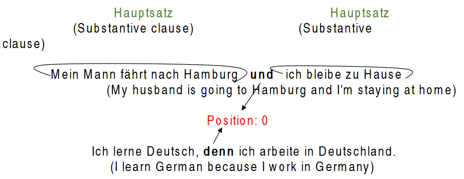
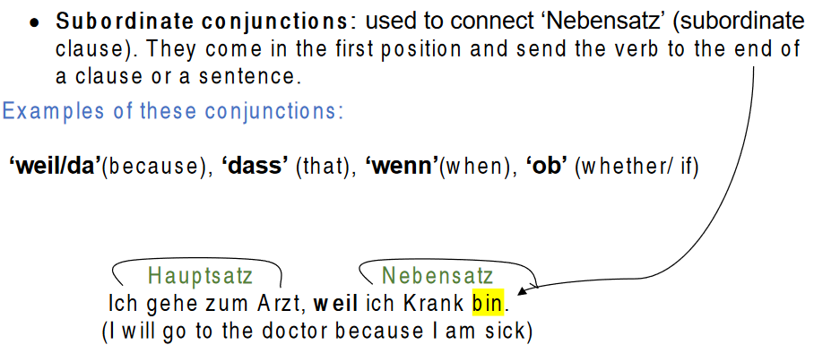
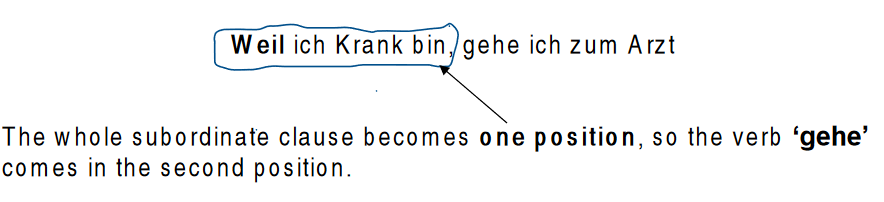

Conjunctions and clauses
We use conjunctions as connecting words to connect two clauses or sentences together such as ‘and’, ‘or’, ‘but’
There are two main groups of conjunctions in German:
- Coordinating conjunctions: used to connect two main clauses “Hauptsatz” and they do not affect the word order. They come in the position 0
Examples of these conjunctions:
und (and), oder (or), denn (because), aber (but)


- If we start with ‘Nebensatz’ (subordinate clause), the sentence will be as follows:

- If we have two verbs in subordinate clause such as (the auxiliary verb or modal verb) and the main verb, the conjugated verb (auxiliary or modal) goes to the end of the clause.
Beispiel:
Ich habe Hunger, weil ich nichts gegessen habe.
I'm hungry because I haven't eaten anything)